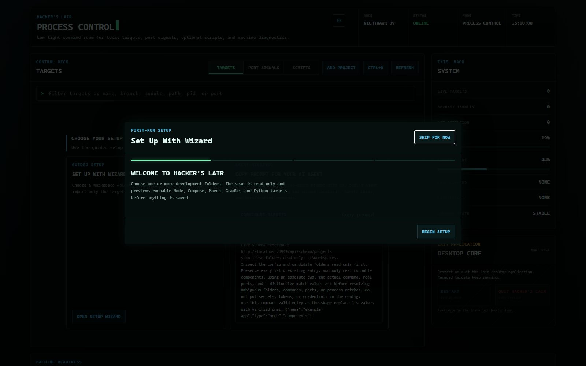

Hacker's
Hacker's From install command to first target.
The normal setup path stays inside the app. Choose folders, review detected commands, and confirm the targets you want—no hand-edited JSON required.
1. Install and launch
On Windows, use the checksum-verifying PowerShell channel. Winget package ID hackerslair.desktop remains unavailable until its community manifest is approved.
irm https://hackerslairhq.github.io/desktop/install.ps1 | iexRun it in a regular PowerShell window; administrator privileges are not needed. If you use an elevated terminal, the installer skips automatic launch and tells you to open the app normally from Start.
Open Hacker's Lair from the Start menu. Linux packages add the same desktop application to the system launcher. The Electron host starts and verifies its own private localhost service; Node.js is bundled.
2. Let your AI agent set it up
The recommended first option is a first-class setup flow for developers who already work with a local coding agent:
- Select Copy prompt for your AI agent.
- Paste the prompt into your preferred local coding agent while it can inspect your workspace.
- The prompt supplies the live config path, bundled schema location, one valid example, selected workspace folders, and rules to preserve existing entries and avoid secrets.
- The agent validates the file and verifies the hot-reloaded result with the CLI:
lair doctor
lair lsThe generated prompt is agent-agnostic. Optional local skill scanning remains excluded unless you explicitly enable the Skills feature in settings.
3. Use guided setup
The first empty Targets view presents Copy prompt for your AI agent first and Set up with wizard second. For the guided path:
- Select Set up with wizard.
- Choose one or more workspace folders with the native folder picker.
- Review proposals found from
package.json, Compose files, Maven, Gradle, and Python entry points. - Clear any proposal you do not want, then select Add selected.
The scan is preview-only. Project configuration is written only after confirmation.

4. Add or edit a project
Select Add project in the Targets toolbar when discovery cannot infer a custom command. Enter a project name and one or more components:
- Folder: an existing absolute working directory.
- Start command: the exact command you already use in a terminal.
- Ports: listeners that identify readiness, separated by commas.
- Process match: a distinctive path or command token used to identify the right process.
- Tracking: choose headless process tracking only when the component never binds a port.
The editor rejects missing folders, duplicate target names, invalid ports, and ports already assigned to another target. Every successful write keeps a restorable backup.
5. Start, inspect, and stop
- Select Initiate on a dormant card. A second overlapping action for that target is rejected rather than racing.
- Watch the card move through Starting to Live. Detected URL chips become clickable only after a real listener or log announcement exists.
- Open Logs from the expanded target or press Ctrl+K and search for the target.
- Select Terminate. A configured graceful stop command runs first; remaining matched processes are then verified as stopped.
EADDRINUSE, Hacker's Lair identifies the listener and offers a deliberate kill-and-retry action.Next signals
Press Ctrl+K for start, stop, logs, scanning, theme, density, and settings commands. Use lair ls, lair start "Target", and lair stop "Target" from a terminal.
Continue with the configuration reference or read how detection works.